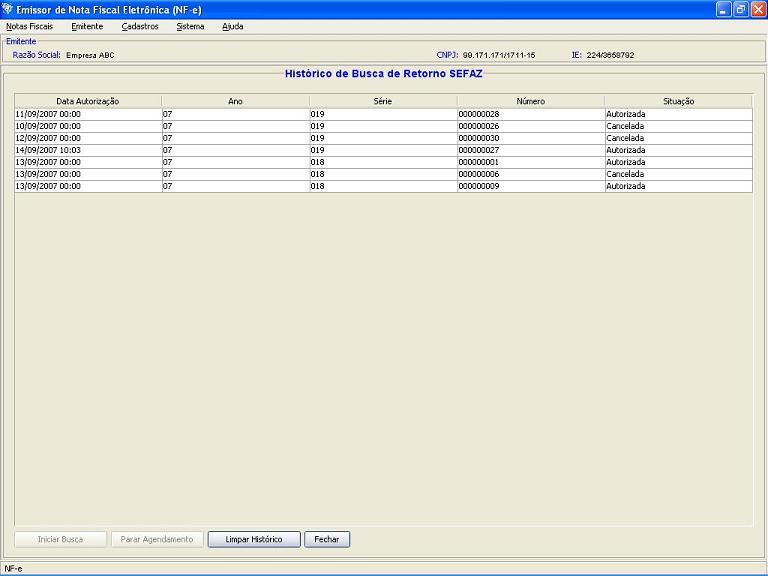

Software Emissor NF-e
Histórico de Autorizações
O
histórico é um quadro informativo que armazena as últimas autorizações,
denegações e cancelamentos de Notas Fiscais eletrônicas realizados pelo
usuário.
Limpando o histórico:
Para limpar o histórico, clicar em Limpar Histórico na tela de Consultar Pendências da SEFAZ
